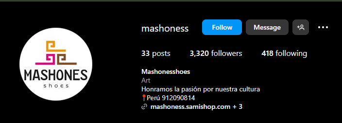
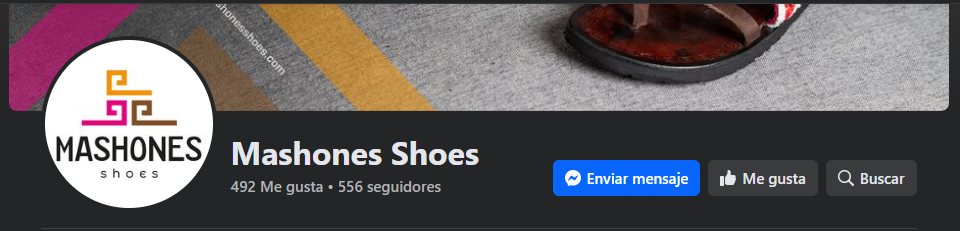
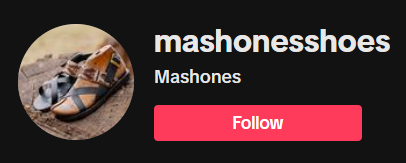

|
| Presentacion Vision y Mision Objetivos Imagenes Videos Maquinaria |
En el corazón de la majestuosa ciudad de Cusco, Perú, se encuentra una empresa que ha tejido sus raíces en la rica historia cultural de la región y ha forjado su camino en la industria del calzado con pasión y dedicación. Esta empresa, cuyo nombre evoca los colores y las texturas de los Andes, ha trascendido fronteras para convertirse en un referente de calidad y artesanía en el mundo del calzado. A lo largo del tiempo la moda del calzado fue evolucionando, actualmente las tendencias de este mercado van dirigidas hacia los diseños únicos y la originalidad, la empresa Mashones fusiona originalidad y nuestra identidad cultural de nuestra región, y es así como nace esta empresa, una marca dedicada a la fabricación de zapatillas, sandalias y productos hechos a base de cuero que trata de capturar la riqueza y belleza de los diseños andinos.
HISTORIA Su historia comienza con la fabricación de calzado de vestir en cuero para damas y caballeros, liderada por el Sr. Artemnio Sarmiento Ascue, quien inició esta primera producción bajo la marca «Mashone», logrando convertirse en el productor de distintas empresas nacionales. Lamentablemente En el año 1990 empezó el terrorismo en nuestro país, por lo que optaron por lliquidar al 50% de personal de la empresa, y con ello, las ventas se redujeron constantemente, lo que originó dar de baja la empresa Mashone. En el año 2016 migraron a la ciudad del Cusco, donde pudieron apreciar año tras año la existencia de comunidades con un gran potencial en el tejido manual con fibra de alpaca, es por ello que se interesaron en esa habilidad, queriendo así desarrollar algún producto de innovación, es así que unieron las habilidades de don Artemio para el calzado con estos textiles, obteniendo productos de alta calidad junto a nuestros artesanos Peruanos. Ahora después de 6 años se atreven a recorrer el mundo con sus productos, poniendo todo el empeño y dedicación a volver a crecer y posicionarse en el mercado nacional e internacional.   
|
Derechos reservados Negocios Electronicos Barrios Coyori,Sayda : SCRUM Master
|